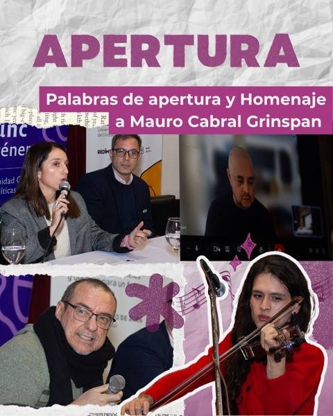
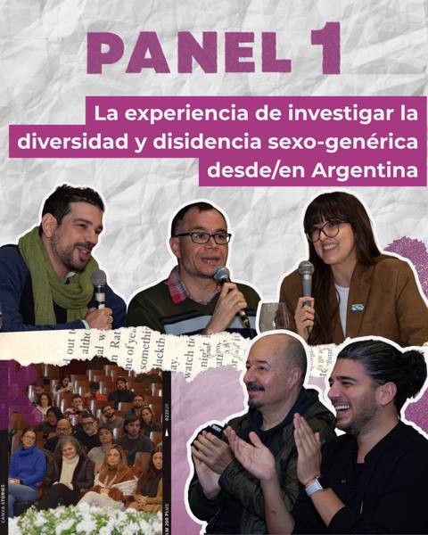
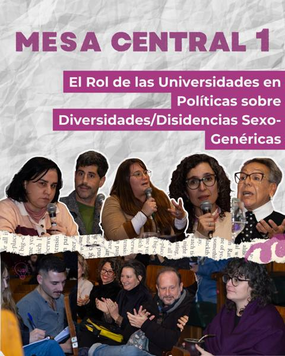
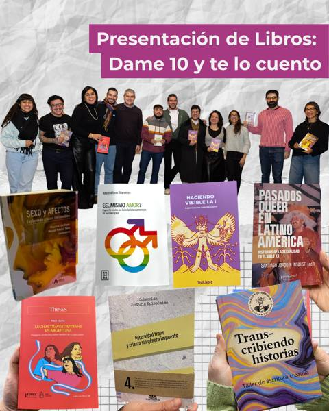
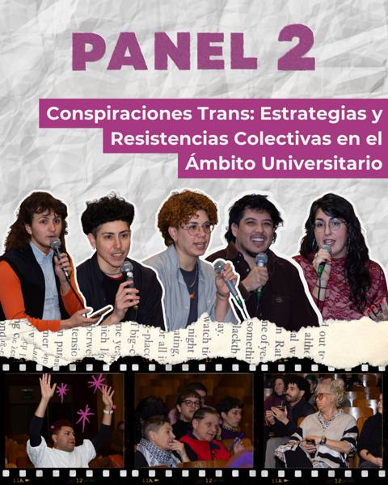
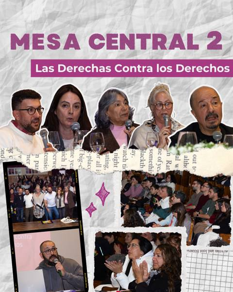
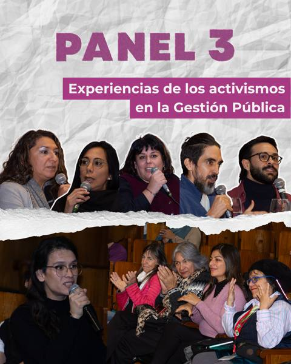
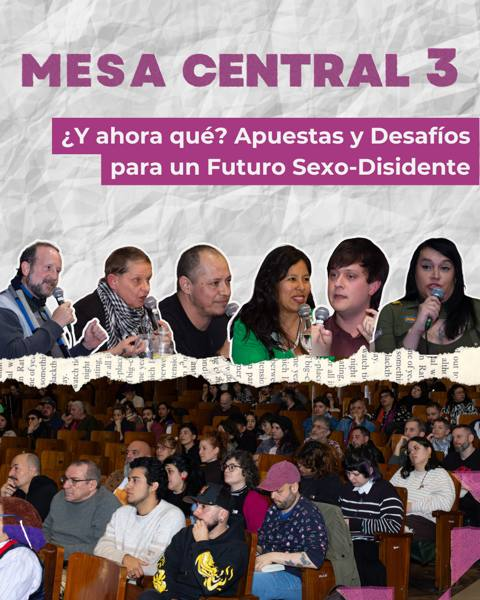
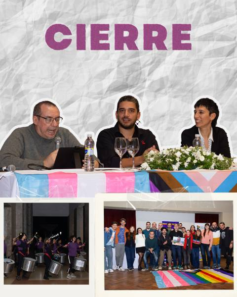

Congresos
Memorias, cifras, fotos y actas de cada edición.
2° Congreso
Segundo Congreso Nacional de Estudios Interdisciplinares sobre Diversidad y Disidencias Sexuales y de Género · Córdoba · 24 al 26 de junio de 2026
- casi600personas
- 274trabajos
- 48sesiones
- 9ejes temáticos
- 355expositorxs
- 417autorxs
- 28panelistas
- 41coordinadorxs
- 16provincias
- asistentxs de8países
Nos encontramos casi 600 personas para pensar, debatir y construir colectivamente futuros sexo-disidentes.
Durante tres jornadas intensas, los paneles y mesas centrales nos convocaron a reflexionar sobre algunos de los grandes desafíos de nuestro presente: el lugar de la investigación sobre diversidad y disidencia sexo-genérica, las estrategias de resistencia colectiva en el ámbito universitario y la gestión pública, el rol de las universidades, el avance de las derechas contra los derechos y las apuestas políticas para construir un futuro más justo para nuestras comunidades.
Estos espacios reunieron, de manera profundamente federal, voces de activistas, investigadorxs y funcionarixs que compartieron diagnósticos, experiencias y desafíos que necesitamos seguir elaborando tanto en nuestros territorios como en red. Recibimos compañerxs de 8 países y de 16 provincias argentinas.
En «Dame 10 y te lo cuento» conocimos 9 publicaciones académicas y autogestivas que evidencian la vitalidad de la producción crítica y activista LGBTIQ+. También vivimos momentos profundamente emotivos, como el homenaje a Mauro Cabral Grinspan y la presentación del libro de Ernesto Meccia.
PróximamentelasACTASaquí
Las actas del 2° Congreso se van a publicar en Acta Académica.
IR A ACTA ACADÉMICA →Mesas centrales y paneles


















Ejes de trabajo


1° Congreso
Primer Congreso Nacional de Estudios Interdisciplinares sobre Diversidad Sexual y de Género · General San Martín, provincia de Buenos Aires · 29 al 31 de mayo de 2024
LasACTASdelprimercongreso
Las actas del 1° Congreso están publicadas en Acta Académica.
VER LAS ACTAS →